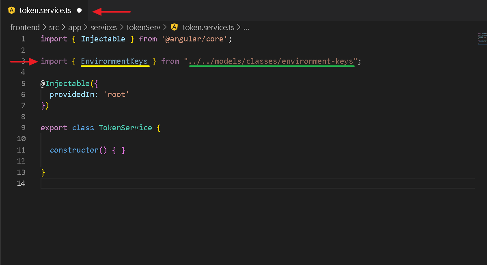
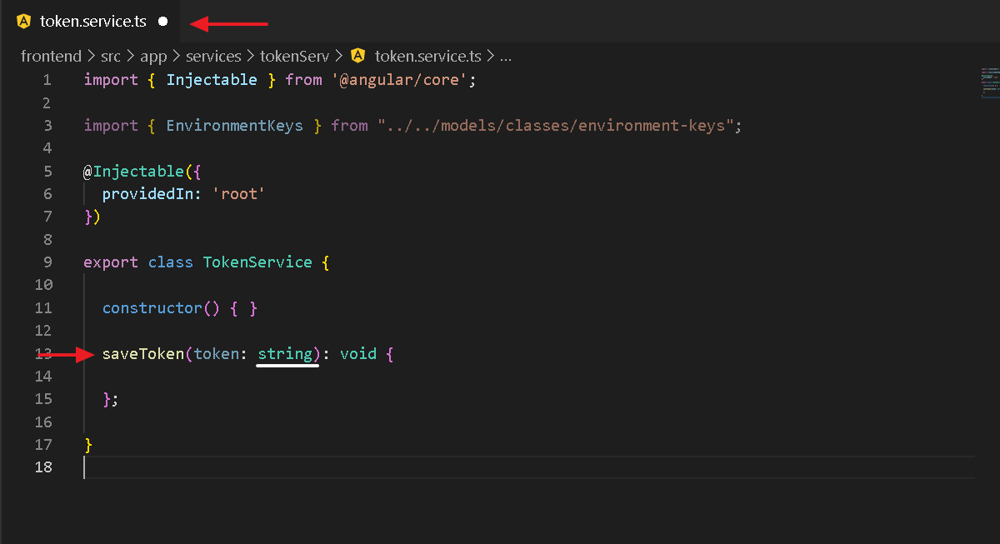
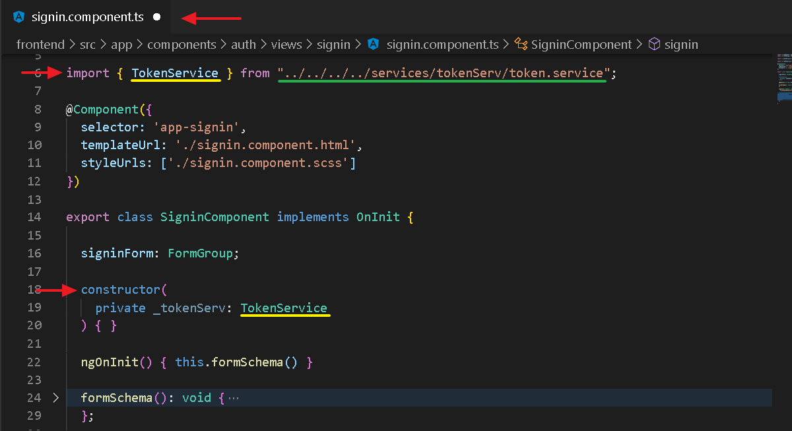
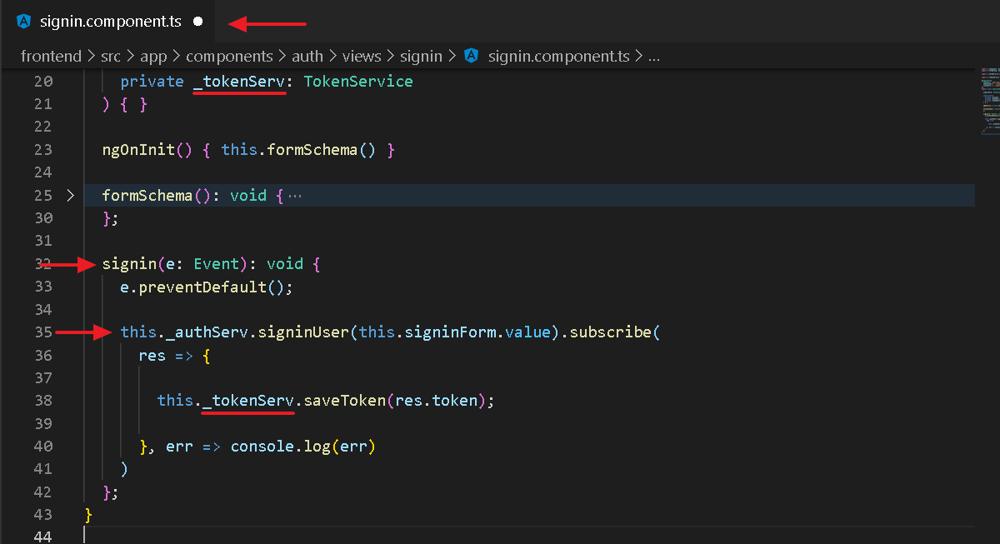
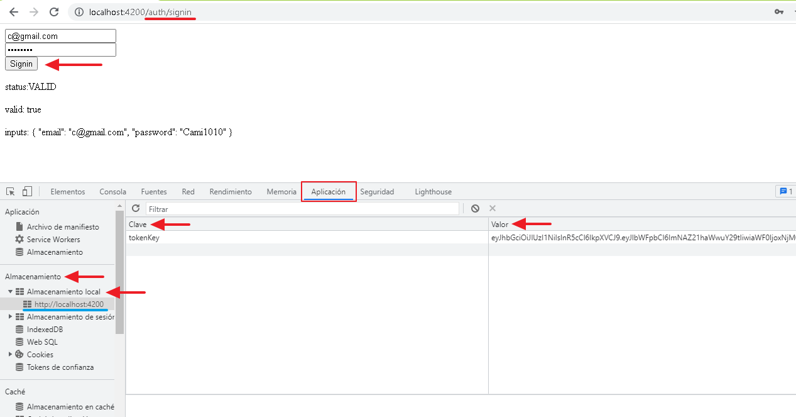
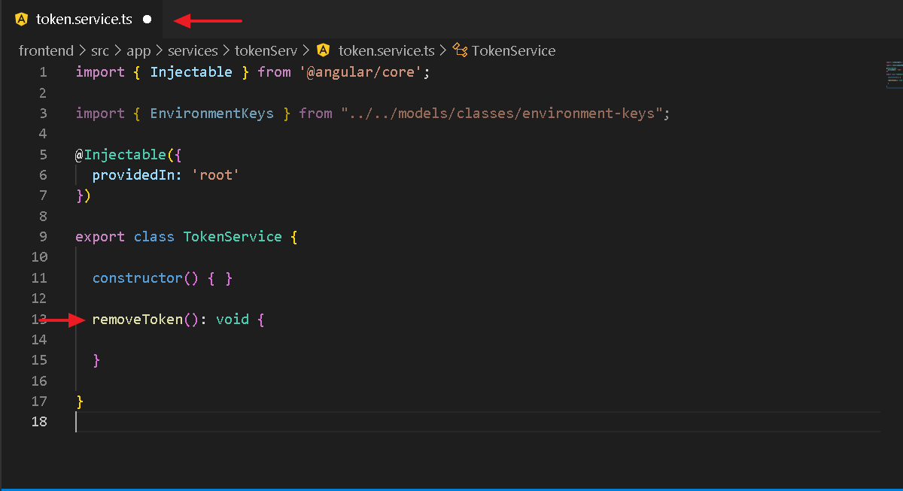
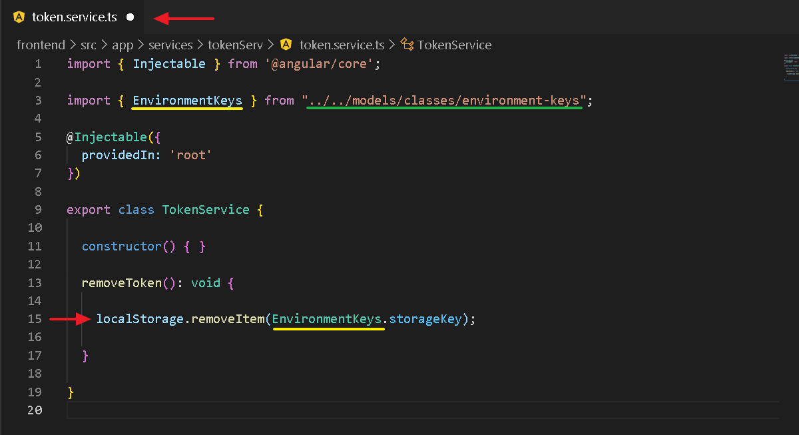
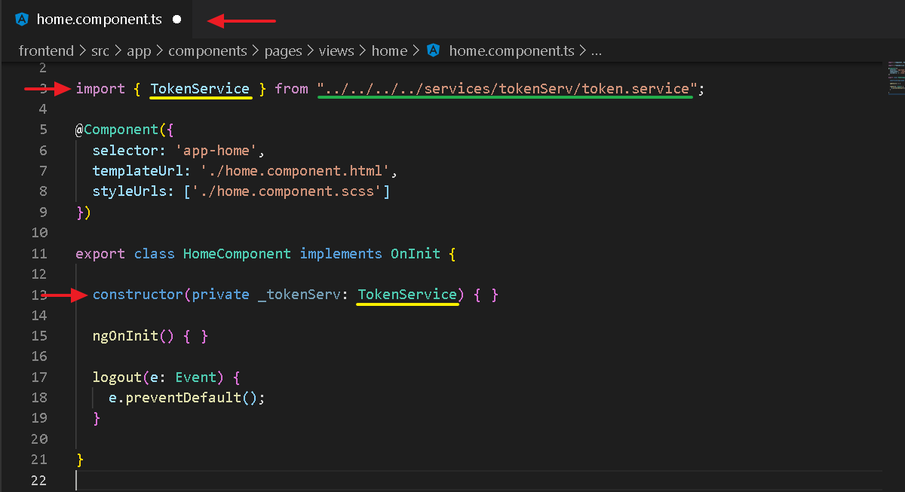
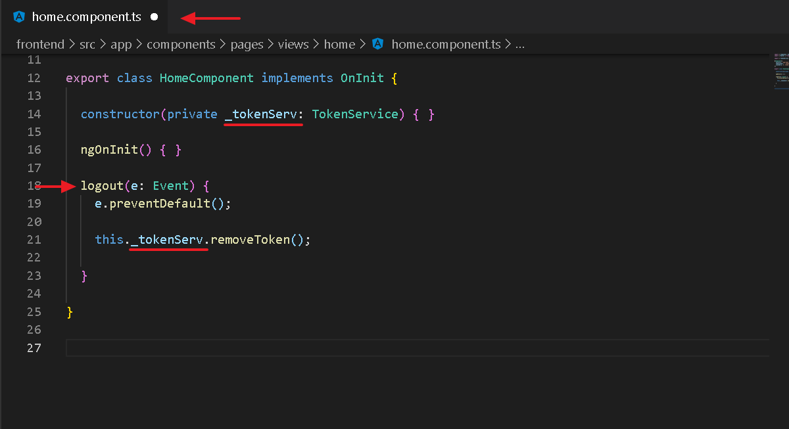
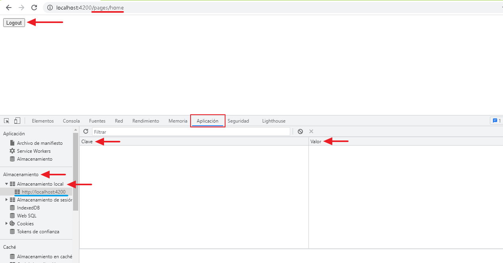

11. LocalStorage
En este apartado aprenderemos a guardar o eliminar informacion del localStorage a travez servicios por lo que ya debes tener uno creado. Como practica vamos a guardar la simulacion de un token de usuario Finalmente validaremos el funcionamiento del codigo.
01. Importacion de la clase

02. Metodo saveToken

03. Implementacion de localStorage setItem

04. Importacion del servicio

05. Llamado del servicio y su metodo saveToken

06. Validando el codigo

------------------------------ End ------------------------------
01. Metodo removeToken

02. Implementacion de localStorage removeItem

03. Importacion del servicio

12. Llamado del servicio y su metodo removeToken

05. Validando el codigo

End LocalStorage